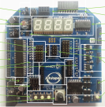
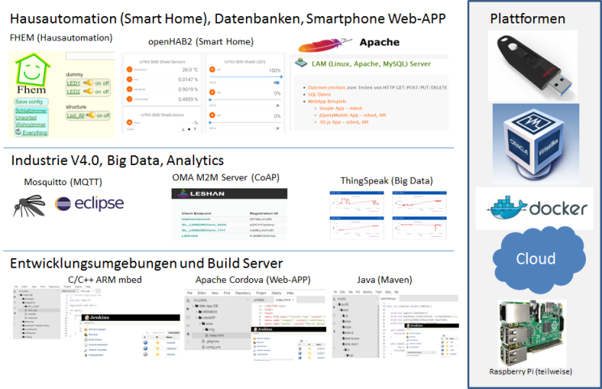

Allgemeines
 IoTKit USB Stick
|

Der IoTKit USB Stick ergänzt die IoTKit Hardware mit Services & Frameworks und Tools. Der IoTKit USB Stick baut dabei auf XUbuntu und Docker auf. Zusätzlich wird ein Account auf der mbed Developer Site und ein Freescale FRDM-K64F Board benötigt. Ein IoTKit SMD Shield ist von Vorteil, aber nicht Bedingung. |
Services & Frameworks
Tools |
Copyright (c) 2010 - 2016, Marcel mc-b Bernet, marcel.bernet(at)ch-open.ch